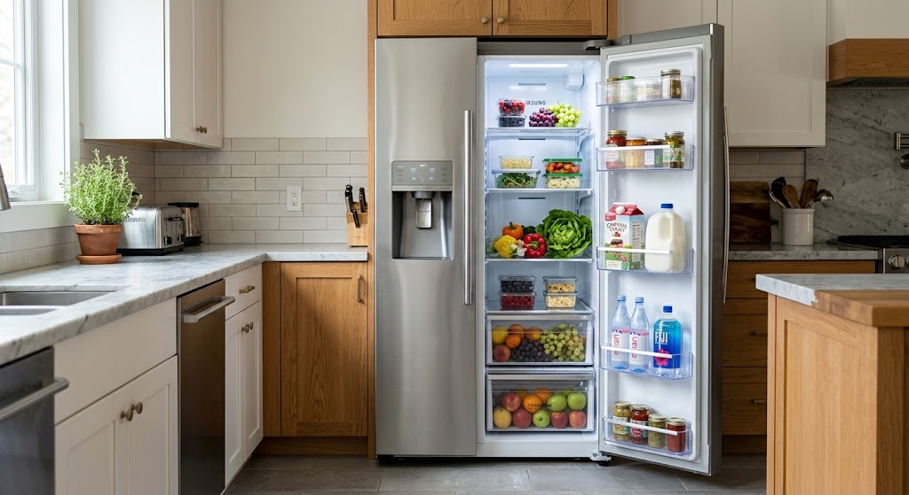
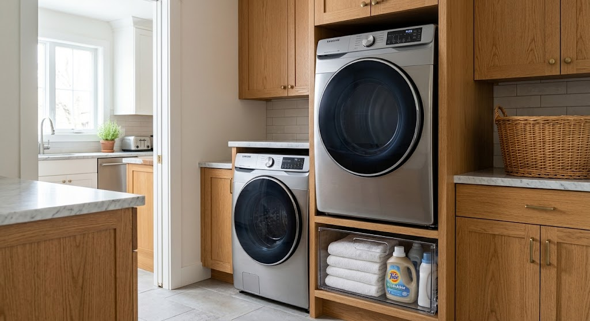
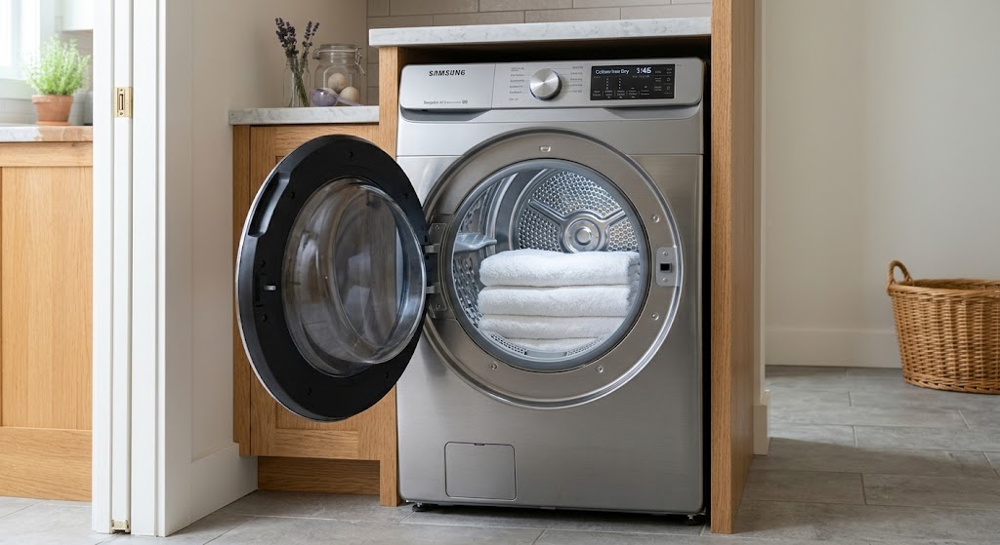
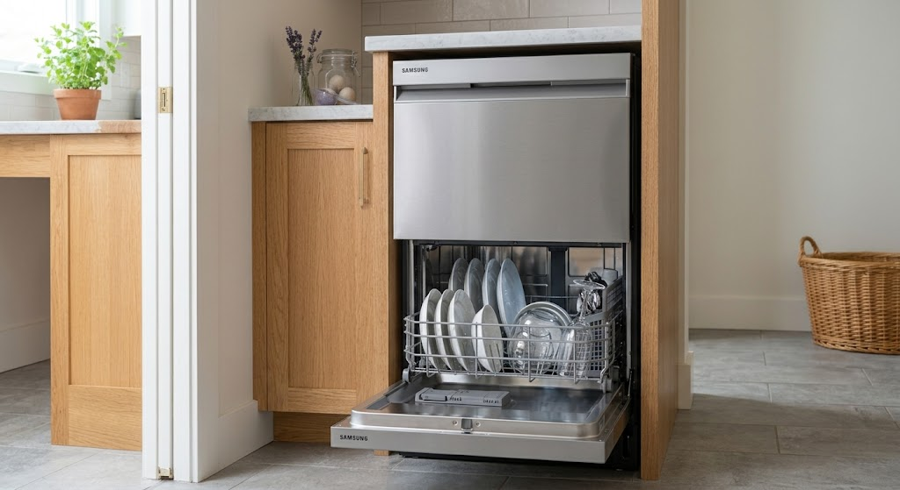

Fast On-Site Samsung Appliance Repairs in Gauteng
Expert technician dispatch for Samsung Digital Inverter fridges, EcoBubble washing machines, sensor dry tumble dryers, and dishwashers. We carry 100% genuine Samsung OEM replacement parts across Sandton, Randburg, Midrand, and Rosebank.
Genuine Samsung Parts
100% Factory OEM Components
- 6-Month Written Warranty on Parts & Labor
- On-Site Inverter PCB Diagnostics & Testing
- Stocked Drain Pumps, Sensors & Door Seals
- Out-of-Warranty Samsung Unit Support
Expert On-Site Servicing for Samsung Digital & Inverter Technologies
Samsung appliances lead the industry in smart technology, from Digital Inverter compressors to Twin Cooling Plus circuits and EcoBubble motor systems. Repairing these advanced units requires specialized diagnostic equipment and genuine factory components to restore original performance.
Eazy Appliance Repairs delivers immediate, mobile technician dispatch across Sandton, Randburg, Midrand, Rosebank, and wider Gauteng. We stock 100% factory-original (OEM) Samsung replacement parts and back every repair with our signature 6-Month Guarantee on Parts & Labor.
Quick Samsung Assessor
Select your Samsung unit type for immediate diagnostic details
We carry genuine Samsung R600a inverter compressors, main PCB control boards, defrost sensors, and evaporator fan motors directly in our Gauteng mobile vans.
Book Fix For This UnitSpecialized On-Site Samsung Repairs Across Gauteng
We deliver factory-spec diagnostics and genuine replacement parts for all Samsung domestic appliance lines across Sandton, Randburg, Midrand, and Rosebank.

Inverter & Twin CoolingSamsung Fridge & Freezer Repairs
Complete repair services for Samsung French-door, side-by-side, top-freezer, and bottom-freezer refrigerators. We specialize in Digital Inverter compressors and Twin Cooling Plus dual-evaporator systems.
Not Cooling: Usually caused by a failed inverter control board, faulty defrost sensor, or low R600a refrigerant. Resolved on-site in 45–60 mins.
Clicking Noise: Indicates a struggling compressor start relay or overload protector. Instant relay replacement restores cooling.
Ice Maker Issue: Caused by a clogged water line filter, frozen ice chute, or faulty solenoid valve. Fixed with OEM replacement valves.
Samsung Washing Machine Repairs
On-site technical support for Samsung EcoBubble, AddWash, front-loader, and top-loader washers. We handle electronic drum errors, drainage failures, and heavy vibration issues.
Not Draining (5E/5C): Caused by a blocked coin filter or broken drain pump impeller. Fixed immediately on-site.
Loud Spin Cycle: Indicates worn tub bearings or loose spider arm assembly. Restored with genuine Samsung bearing kits.
Door Locked / Error: Caused by a burned thermal interlock switch or broken latch assembly. Quick part swap on-site.

EcoBubble & AddWash
Heat Pump & Sensor DrySamsung Tumble Dryer Repairs
Fast maintenance for Samsung heat pump, condenser, and vented tumble dryers. We address heating element trips, drum rotation faults, and moisture sensor inaccuracies.
Not Heating: Blown thermal fuse or failed heating element assembly. Replaced on-site using OEM thermal cut-offs.
Drum Not Turning: Snapped drive belt, failed idler pulley, or bad capacitor. Repaired in under an hour.
Shuts Off Early: Dirty humidity sensor bar or blocked condenser airflow. Calibrated and cleaned on-site.
Samsung Dishwasher Repairs
Certified service for Samsung WaterWall and StormWash integrated dishwashers. We repair drainage leaks, heating faults, and wash arm spray failures across Gauteng.
Leak Code (LE/LC): Internal base tray leak triggered microswitch. Fixed by replacing worn sump gaskets or tub hoses.
Dishes Stay Dirty: Blocked wash arm nozzle or failing circulation pump impeller. Cleaned or replaced on-site.
Won't Start / OE: Failed door latch sensor or water inlet solenoid valve. Swapped with genuine Samsung parts.

WaterWall & StormWashAdvanced Inverter & PCB Testing On-Site
Samsung’s smart microprocessors and inverter motors require specialized diagnostic tools. Our technicians test and repair electronic circuits directly at your home.
Genuine Samsung OEM Spares
Certified factory components for long-term reliability
-
Backed by 6-Month Written Warranty Full coverage on both replacement parts and on-site technician labor.
-
Exact Microprocessor Calibration Ensures seamless communication between digital control boards and inverter motors.
-
Maintains Energy Efficiency Keeps power consumption at manufacturer-rated levels to lower your electricity bills.
The Risk of Generic Knockoffs
Why uncertified aftermarket parts fail quickly
-
Premature Component Burnout Generic relays and sensors often fail under fluctuating South African grid voltage.
-
PCB Board Damage Incompatible electrical resistance can short out expensive main control boards.
-
Invalidates Equipment Safety Non-standard parts eliminate protection against electrical surges and thermal overloads.
Samsung Appliance Error Code Diagnostic Guide
Is your Samsung appliance flashing a fault code on its digital display? Use our instant lookup tool to identify the issue and recommended fix.
| Appliance | Error Code | Diagnosed Issue | Recommended Technician Fix | Action |
|---|---|---|---|---|
| Washer | 4E / 4C |
Water Supply Fault (No Water Intake) | Clean intake mesh filters, test solenoid valve, inspect water pressure switch. | Book Fix |
| Washer | 5E / 5C |
Drainage Error (Water Not Emptying) | Inspect drain hose for kinks, clear coin trap, replace broken drain pump motor. | Book Fix |
| Washer | UE / UB |
Unbalanced Load Error | Level unit legs, check shock absorbers, inspect drum suspension springs. | Book Fix |
| Washer | dE / dE1 |
Door Lock / Interlock Failure | Inspect door latch sensor, replace burned electronic door lock assembly. | Book Fix |
| Fridge | 22E / 22C |
Evaporator Fan Motor Fault | Test fan blade rotation, clear internal ice buildup, replace fan motor assembly. | Book Fix |
| Fridge | 25E |
Freezer Defrost Sensor Error | Test thermistor resistance, replace failed defrost sensor or heating element. | Book Fix |
| Fridge | 88 88 |
Communication / Power Board Reset | Diagnose main PCB control board, check power surge damage, reset control panel. | Book Fix |
| Dryer | FE |
Power Supply Frequency Fault | Test power outlet voltage, calibrate control board frequency sensor. | Book Fix |
| Dryer | HC / HC2 |
Heater Overheating Protection | Clear lint duct blockage, replace tripped thermal cut-off thermistor. | Book Fix |
| Dishwasher | LE / LC |
Water Leakage Sensor Triggered | Locate internal tub leak, replace worn sump gasket or cracked water hose. | Book Fix |
Same-Day Samsung Repair Mobile Vans Across Gauteng
Our mobile units travel daily through Sandton, Randburg, Midrand, Rosebank, and surrounding areas fully stocked with original Samsung digital inverter spare parts.
Samsung Primary Mobile Hubs
Technicians on standby in your area for fast on-site dispatch:
Check Samsung Van Status
Select your area and appliance type for immediate dispatch status
Need Urgent Samsung Appliance Repair in Gauteng?
Connect directly with our Samsung technical desk or request a priority callback. Our mobile vans are stationed across Sandton, Randburg, Midrand, and Rosebank stocked with genuine Digital Inverter, EcoBubble, and Twin Cooling OEM spare parts.
- 6-Month Written Warranty on Parts & Labor
- 100% Factory OEM Samsung Spare Parts
- Upfront Fixed Quotations — No Surprise Fees
Request a Samsung Repair Callback
Submit your details for a priority technician callback within 15 minutes.
Frequently Asked Samsung Repair Questions
Everything you need to know about our specialized Samsung support, genuine spare parts sourcing, and on-site servicing across Sandton, Randburg, Midrand, Rosebank, and wider Gauteng.
Yes. We exclusively fit 100% factory-original (OEM) Samsung spare parts sourced from authorized distributors. From Digital Inverter compressors and main PCB control boards to EcoBubble drain pumps, we never use cheap generic knockoffs.
Absolulely. Our mobile vans carry specialized electronic diagnostic tools to read and reset fault codes (such as 4E, 5E, UE, 22E, or LE) and calibrate microprocessors directly at your home.
Yes. We specialize in post-warranty and out-of-warranty Samsung repairs. Every job completed by our technicians includes our own written 6-Month Warranty covering both installed parts and labor.
Our technicians are stationed daily across primary Gauteng hubs including Sandton, Randburg, Midrand, and Rosebank, allowing us to offer same-day emergency dispatch with average arrival times under 60 minutes.
Yes. Our technician conducts an initial physical inspection and provides a fixed, transparent written quote prior to starting any repair work. There are no hidden fees or surprise charges.